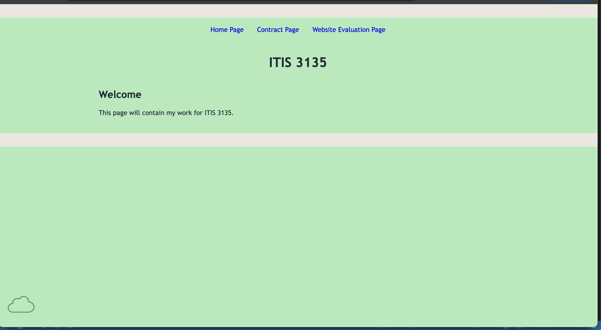

Peer Review 2 - Little, Alanah

- Submission: The Charlotte ITIS 3135 page does load, but it is currently very limited. The page mainly shows a welcome message, and the navigation links on that page are not working correctly.
- File/Folder Names: The repository appears to have a solid folder structure, but the live Charlotte page has broken links, so some of the paths likely need to be corrected.
-
Design:
- The page is clean and readable, but it is extremely minimal right now.
- There is not much styling or visual structure on the Charlotte ITIS page yet.
- Adding more layout, spacing, and design consistency would help the page feel more complete.
-
CRAP:
- Contrast: The text is easy enough to read, so basic readability is okay.
- Repetition: There is not enough visible content yet to really show strong repeated branding or styling.
- Alignment: The page is simple and not cluttered, but it also feels unfinished.
- Proximity: Since there is very little content, this is hard to fully judge right now.
-
Page has within it:
- Header: Yes
- Main: Yes
- Footer: No clear visible footer on the Charlotte ITIS page
- Nav: Yes, but the links do not work correctly
- Header has site/brand header with text in an h1: No clear branded site header was visible. The page mainly displays "ITIS 3135" with a simple welcome section.
- Main starts with name of page as an h2 and does not include name of site/brand: Yes, the page shows "Welcome" as the h2.
- Page has brand tagline: No tagline was visible.
-
Footer:
- I was not able to identify a visible working footer on the Charlotte ITIS page.
- HTML validation link: Yes
- CSS validation link: Yes
- Notes: Overall, this looks more like an early starting point than a fully working site page right now. The biggest issue is that the navigation on the Charlotte ITIS page does not work, since the Home Page, Contract Page, and Website Evaluation Page links all lead to 404 pages. Because of that, I was not really able to move through the site from the main course page. I would focus first on fixing the page links and making sure the site can actually be navigated, then work on adding more structure, footer content, and styling so the page feels more complete.